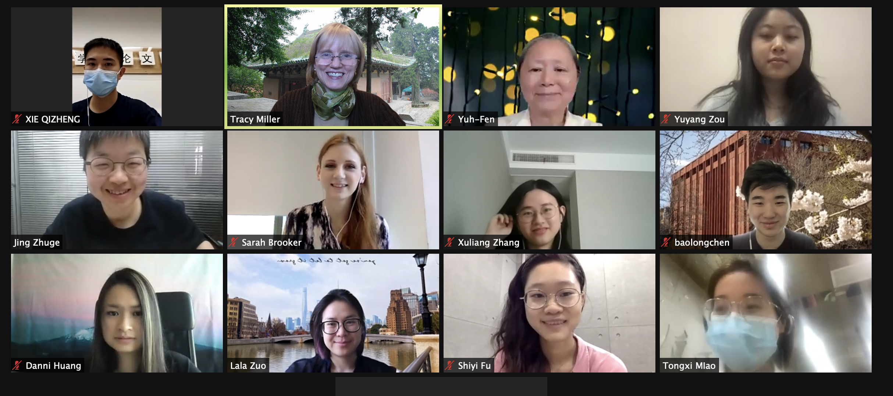

<?xml version="1.0" encoding="UTF-8"?>
<div xmlns="http://www.w3.org/1999/xhtml" xmlns:xi="http://www.w3.org/2001/XInclude" data-template="templates:surround" data-template-with="templates/page.html" data-template-at="content">
    <div class="row top-padding">
        <div class="container">
            <div class="indent">
                <div>
                    
                    <h2>Chinese Monuments Workshop Spring 2021</h2>
                    <p>The Spring 2021 Chinese Monuments workshop was a collaboration among Southeast University, NYU Shanghai, and Vanderbilt University faculty, staff, and students. We worked together to enrich the AS research website through providing short definitions of fifty-four common architectural terms and enhancing historical information and images to certain sites in the Site Archive.</p>
                    <p>Workshop Participants in Spring 2021:</p>
                    <ol>
                        <li>許玉棻 Benda, Yuh-Fen (Asian Studies Librarian, Vanderbilt University, USA)</li>
                        <li>宋晓莉 Brooker, Sarah (NYU Shanghai)</li>
                        <li>陳寶龍 CHEN, Baolong (NYU Shanghai)</li>
                        <li>付诗怡 FU, Shiyi (Masters Degree student, School of Architecture, Southeast University, China)</li>
                        <li>黄聃婗 HUANG, Danni (Vanderbilt University, Class of 2023, USA)</li>
                        <li>缪彤茜 MIAO, Tongxi (Masters Degree student, School of Architecture, Southeast University, China)</li>
                        <li>梅晨曦 Miller, Tracy (Associate Professor, College of Arts and Science, Vanderbilt University, USA)</li>
                        <li>谢祺铮 XIE, Qizheng (Masters Degree student, School of Architecture, Southeast University, China)</li>
                        <li>张序亮 ZHANG, Xuliang ((Vanderbilt University, Class of 2023, USA)</li>
                        <li>诸葛净 ZHUGE Jing (Associate Professor, School of Architecture, Southeast University, China)</li>
                        <li>鄒宇洋 ZOU, Yuyang (Vanderbilt University, Class of 2023, USA)</li>
                        <li>左拉拉 ZUO, Lala (Associate Professor of Art History, NYU Shanghai)</li>          
                    </ol>
                </div>
            </div>
        </div>
        <div class="container">
            <hr/>
            <h3>The <em>Architectura Sinica</em> project was made possible by these institutions and sponsors:</h3>
            <hr/>
            <ul class="list-inline funding sponsors">
                <li>
                    <a href="https://www.neh.gov/" class="logo" target="_blank">
                        
                    </a>
                </li>
                <li>
                    <a href="https://mellon.org/" class="logo" target="_blank">
                        
                    </a>                    
                </li>
                <li>
                    <a href="http://www.grahamfoundation.org/" class="logo" target="_blank">
                        
                    </a>                    
                </li>
                <li>
                    <a href="https://as.vanderbilt.edu/" class="logo" target="_blank">
                        
                    </a>                    
                </li>
                <li>
                    <a href="https://as.vanderbilt.edu/historyart/" class="logo" target="_blank">
                        
                    </a>                    
                </li>
                <li>
                    <a href="http://www.library.vanderbilt.edu/" class="logo" target="_blank">
                        
                    </a>                    
                </li>
                <li>
                    <a href="http://www.seu.edu.cn/" class="logo" target="_blank">
                        
                    </a>                    
                </li>
                <li>
                    <a href="http://arch.seu.edu.cn//" class="logo" target="_blank">
                        
                    </a>                    
                </li>
            </ul>
        </div>
    </div>
    
</div>
